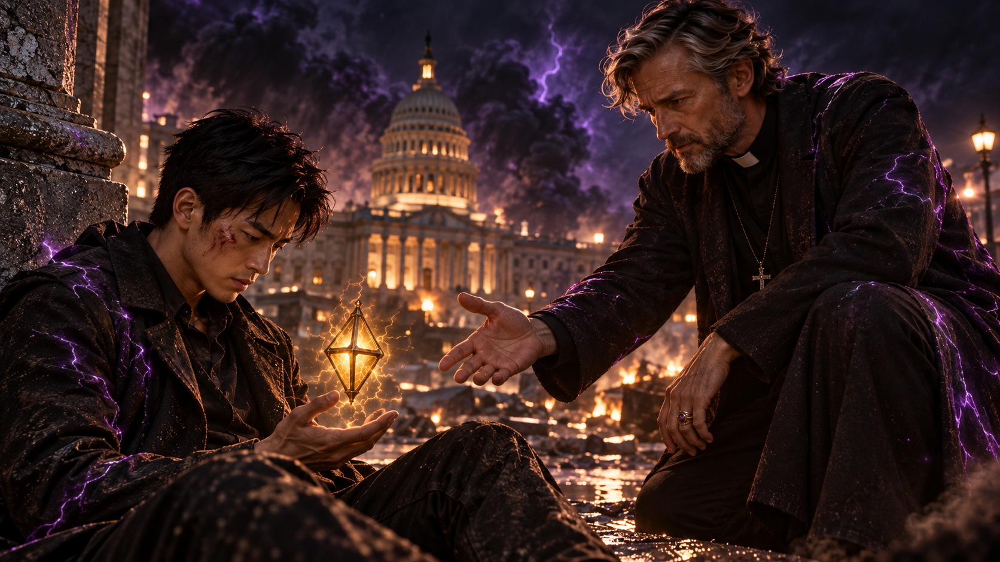
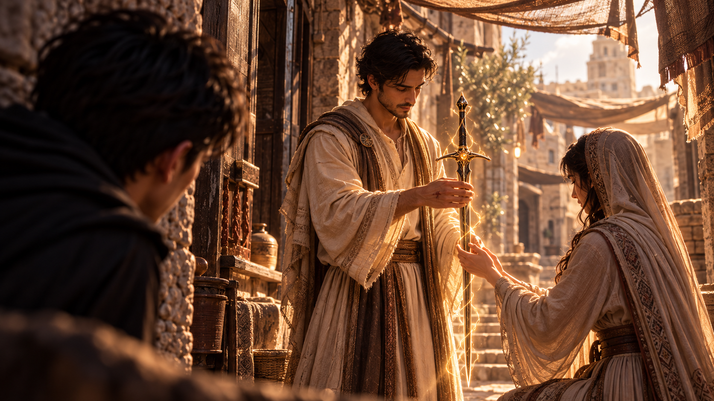

WHITE MAGIC ART STUDIO
第二十章
安德烈之劍
美國．鹽湖城．猶他州議會大廈上空
鹽湖城的天空，早已被濃重的黑霧籠罩。
猶他州議會大廈上方，兩道身影在雲層間高速交錯。
金色雷光一次次劃破夜空，卻又轉瞬被翻湧的黑暗吞沒。雷鳴接連炸響，震得下方建築的玻璃微微顫動。
雷・安德烈懸浮在半空，目光始終鎖定著前方的魔神。
一枚黑色菱形水晶，從他的掌心緩緩升起。
阿法。
金色電流沿著水晶邊緣流動，細密的雷光逐漸凝聚成數顆光球，環繞著雷緩慢旋轉。
下一瞬間，魔神的身影驟然消失。
雷抬起手。
一道金雷朝右側疾射而去。
轟！
雷光擊穿黑霧，魔神卻已在最後一刻閃開，重新出現在數十公尺外。
「沒用的。」
魔神笑了。
黑霧從牠身後洶湧而出，在空中不斷擴張，彷彿一張足以吞噬整片天空的巨口。
「你那點攻擊，對我來說就像在撥風。」
雷沒有回答。
他只是輕輕抬起手指，讓身旁的雷球再次散開。
金色光點在空中緩慢移動，彼此之間毫無規律。有些逐漸升高，有些則沿著魔神的兩側飄去。
魔神看著那些雷球，嘴角揚起一抹輕蔑的笑。
「怎麼了？以你的程度，就只能靠這些？」
雷終於開口。
「哼……」
他緩緩舉起左手。
「足夠讓你分心，就好了。」
阿法驟然亮起。
原本散布在空中的雷球，同時爆發出耀眼光芒！
一道道金色電流在球體之間迅速連結，轉眼間便交織成密集的雷網，將魔神困在中央。
「什——」
魔神尚未反應過來，數十道雷電便猛然收緊！
轟隆！
金色雷鎖纏住牠的身軀，將牠牢牢固定在半空。
黑霧不斷翻騰，試圖從雷電之間的縫隙逸出，卻又被接連亮起的金光逼回原處。
魔神猛然抬頭。
「你什麼時候設下的？！」
雷沒有回答。
他緩緩向前。
黑色風衣在強烈的氣流中翻動，掌心的阿法則逐漸升至胸前。
接著，他抬起雙手。
擺出一個自己永遠不會忘記的姿勢。
十五年前。
詹姆斯也曾經這樣站在魔神面前。
雷閉上眼睛。
金色雷光開始向阿法中央收攏，水晶隨之劇烈震動。
被雷電束縛的魔神，突然察覺了什麼。
牠臉上的笑容消失了。
「等等……」
阿法的光芒越來越強。
一股龐大的吸力從水晶深處傳來，魔神身上的黑霧開始被拉扯，化作一道道扭曲的暗流，朝雷的方向延伸。
「不可能……」
魔神奮力掙扎。
「血祭封印？！」
雷緩緩睜開眼睛。
「你會死的！」魔神怒吼，「你知道自己在做什麼嗎？！」
「安德烈家族的信念……」
雷注視著牠。
「不是你這種貨色能懂的。」
阿法再次爆發金光。
魔神周圍的黑霧被強行拉扯，金色雷鎖也隨之收緊。
「你根本只是在模仿你哥哥！」
魔神怒吼。
「這算什麼信念？！」
雷的雙手微微顫抖。
「我不是在模仿他。」
他低聲說。
「我是在完成他……」
話音尚未落下，阿法便釋放出更加強烈的光芒。
然而，就在這時——
轟！
一道紫色雷電突然從天而降！
雷猛然抬頭。
下一瞬間，紫光便將他的身影完全吞沒。
阿法的光芒驟然熄滅。
金色雷鎖接連崩散。
封印被迫中斷。
魔神重新獲得自由，黑霧迅速在牠周圍聚集。
而雷・安德烈，已經消失在夜空之中。
＊
雷重新睜開眼睛時，發現自己正坐在一棟建築旁的地面上。
耳邊傳來遠處的爆炸聲。
紫色電流仍在周圍的空氣中逐漸消散。
他怔了片刻，才緩緩抬頭。
一道熟悉的身影站在面前。
傑西。
牧師的臉色相當難看。
「你瘋了嗎？」
雷沒有回答。
「血祭封印？」
傑西走近一步。
「這就是你想出來的計畫？！」
雷垂下頭。
阿法靜靜躺在掌心，已經恢復成原本的黑色水晶。
「我……必須這麼做。」
他的聲音有些沙啞。
「請讓我這麼做……」
「不。」
傑西的回答沒有絲毫猶豫。
雷抬起頭。
「傑西……」
「你到現在，還是很在意詹姆斯的死，對吧？」
雷沉默了。

傑西看著他。
「但你哥哥當年選擇這麼做，不代表你也必須走上同一條路。」
他停頓片刻。
「他把家人託付給你，是因為相信你能照顧好他們。」
「不是要你跟他一樣。」
雷緊緊握住阿法。
「可是……」
「更何況，我們現在已經知道，血祭封印是能被有心人士破壞的。」
傑西的聲音沉了下來。
「你再做一次，又能改變什麼？」
雷沒有回答。
遠處傳來一陣沉悶的雷聲。
過了很久，他才低聲開口。
「我真的不知道……」
傑西望著他。
「不知道什麼？」
雷看向遠方被黑霧籠罩的天空。
「我還能為這個世界……」
他停了一下。
「為那個孩子，做些什麼。」
傑西的神情稍微緩和。
「那就試著等待。」
雷轉頭看他。
「等待？」
「還有相信。」
傑西蹲下身，讓自己的視線與雷平齊。
「拉比既然選擇柴克成為雷翼繼承者，就一定有祂的計畫。」
雷皺起眉頭。
「那孩子現在在哪裡？」
他立刻追問：
「你知道魔神的目標就是他，對吧？」
「我知道。」
傑西點頭。
「我已經送他們三個去了以色列。」
「以色列？」
「寇德薩拉。」
雷怔住。
「你讓他們去找安德烈之劍？」
「對。」
傑西站起身。
「如果他們能通過試煉，取得那把劍，也許就能依照傳說壓制魔神。」
「就算失敗，至少暫時也能避開魔神的追殺。」
雷看著他。
片刻後，忍不住苦笑。
「真是……很有你的風格。」
傑西沒有反駁。
雷收起阿法，緩緩站起身。
「那美國這邊呢？」
他望向城市上空。
「聖術會不可能什麼都沒做吧？」
「他們已經派出人手，和守護者分赴各州，協助鎮壓因魔神現世而暴動的惡魔。」
傑西說。
「至於鹽湖城……」
他停頓片刻。
「我們的任務，是盡可能拖住魔神，不讓牠繼續擴大攻擊範圍。」
雷皺緊眉頭。
「但這只是治標不治本。」
「我知道。」
傑西望向遠方。
「這是一場看不到盡頭的戰役。」
「但至少，你不會獨自作戰。」
一道聲音從兩人身後傳來。
雷與傑西同時回頭。
羅尼與潔西卡正沿著街道走來，身後還跟著幾名東湖教會的聖術師。
眾人穿過瀰漫煙塵的街道，在兩人面前停下。
雷望著他們。
「大家……」
傑西朝他伸出手。
「看來，我們現在有一致的想法了。」
雷看著那隻手。
片刻後，他伸手握住。
傑西用力將他拉起，雷重新站穩，望向周圍的同伴。
「我們分頭行動。」
他迅速掃視眾人。
「各自守住不同方向的戰線。如果遇到平民，就引導他們前往附近的教會避難。」
他轉向羅尼與傑西。
「我和羅尼、傑西負責正面牽制魔神。」
傑西卻搖了搖頭。
「我還有件事要先處理。」
雷看向他。
「什麼事？」
傑西的神情冷了下來。
「塞西爾・約爾森。」
他望向城市另一端。
「我得好好處理一下家務事。」
雷沉默片刻，點了點頭。
隨後，他轉向其他人。
「準備行動！」
眾人迅速散開。
遠處的黑霧仍在翻騰，雷聲不時從城市上空傳來。
雷抬頭望了一眼天空。
阿法在掌中亮起微弱的金光。
他握緊水晶，朝前方走去。
＊
寇德薩拉．主殿內部
基路伯離去後，原本空曠的展示廳開始發生變化。
一道道微光在潔白的石地上浮現，隨後逐漸凝聚成形。
石製展台陸續出現在大廳各處。
各式各樣的古老器物，靜靜陳列其上。
有些被柔和的光芒籠罩，有些則看不出任何特別之處。它們的形制與材質各不相同，卻都帶著一種難以言喻的古老氣息。
克里斯環顧四周。
「只有七分鐘。」
他看向弟弟妹妹。
「我們得趕快找到安德烈之劍。」
安娜點頭，率先朝附近的展台走去。
柴克正要跟上，卻忽然想起什麼。
「哥，等一下。」
克里斯回過頭。
「怎麼了？」
柴克遲疑片刻。
「剛剛那個天使說……我只差一把術器了。」
「對啊。」
克里斯看著他。
「我們不就是來找安德烈之劍的嗎？」
「可是……」
柴克攤開右手。
他望著自己的掌心，彷彿還能感覺到那股金色電流。
「我剛剛在試煉裡，真的使出了雷電。」
克里斯點頭。
「我看到了。」
「還有之前打破你屏障的時候。」
「嗯。」
柴克低頭看著自己的手。
「我好像開始能感受到體內的雷之聖術了。」
他抬起頭。
「所以我在想……」
他停頓了一下。
「祂說的術器，真的是安德烈之劍嗎？」
克里斯看了他一眼。
「你覺得呢？」
「我哪知道！」
柴克皺起眉頭。
「我連自己到底是哪一種聖術師都還沒搞清楚。」
克里斯沒有立即回答。
片刻後，他才說：
「也許等找到那把劍，就會知道了。」
柴克望著哥哥，似乎還想再問些什麼。
「先走吧。」
克里斯拍了拍他的肩膀。
「時間可不等人。」
柴克只好點頭。
兩人繼續往展示廳深處走去。
然而，他仍忍不住低頭看了一眼自己的手。
那道金色雷光，早已消失不見。
「等等……」
克里斯忽然停下腳步。
他的目光落在不遠處的一座展台上。
「不可能……」
柴克順著他的視線看去。
那裡陳列著一根古老的木杖。
杖身看似平凡，表面卻有著難以辨認的古老刻痕。
克里斯緩緩走近。
「那是……摩西的手杖嗎？」
安娜也跟了過來。
「我記得有個傳說，認為摩西其實也是聖術師，所以才能分開紅海。」
「我也聽過。」
克里斯的目光始終沒有離開那根木杖。
「不過那一直只是個沒有根據的推測。」
他看著展台，忍不住輕聲感嘆。
「沒想到竟然有機會在這裡看見它……」
柴克也望著那根木杖。
從小聽過的古老故事，此刻竟以如此真實的形式出現在眼前。
他慢慢環顧四周。
這座展示廳裡，究竟還收藏著多少只存在於傳說中的事物？
「那個是……」
克里斯的聲音再次傳來。
他正望著遠處另一座展台。
「約櫃？」
安娜順著他的目光看去。
一件古老的聖物靜靜陳列在大廳深處。
「天啊……」
她忍不住低聲說。
「考古學家願意為那個東西付出一切吧。」
克里斯已經走了過去。
安娜正準備跟上，卻發現柴克沒有動。
「Ｚ？」
她回過頭。
柴克正望向展示廳的另一端。
「你還好嗎？」
柴克沒有立刻回答。
他隱約感覺到，有什麼東西正在那個方向等待著他。
那感覺很奇怪。
不是聲音，也不是他能清楚辨認的力量。
只是每當他試著移開目光，心裡便會再次浮現那股熟悉感。
「我沒事……」
柴克緩緩往前走。
「只是……」
他望著前方。
「那邊好像有什麼東西。」
克里斯與安娜交換了一個眼神，隨即跟了上去。
三人穿過數座展台。
最後，柴克停在一柄長劍面前。
那是一把通體漆黑的古老長劍。
細緻的金色紋路沿著劍身延伸，在光線下隱約閃爍，彷彿有雷電被封存在金屬深處。
長劍靜靜安放在石製劍架上。
柴克望著它，久久沒有說話。
克里斯走到他身旁。
這就是……」
他不自覺放輕聲音。
「初代雷翼的術器，安德烈之劍？」
安娜也仔細端詳著劍身。
「可是我一直有個疑問。」
她看向克里斯。
「術器不是會在主人死後消失嗎？」
克里斯點頭。
「一般來說是這樣。」
「那這把劍怎麼還在？」
克里斯思索片刻。
「也許因為它是世界上第一把術器，所以和其他術器不同。」
他望向劍架。
「又或者，是拉比特別讓它留了下來。」
安娜沒有再問。
柴克卻彷彿沒聽見兩人的交談。
他緩緩走近石台。
那股熟悉的感覺，越來越清晰。
他伸出右手。
指尖輕輕碰上劍柄。
下一瞬間——
一股強烈的力量猛然湧入他的意識！
眼前的展示廳迅速模糊。
克里斯與安娜的聲音逐漸遠去。
柴克只覺得周圍的一切都在旋轉。
接著，黑暗中傳來一道溫柔的聲音。
「安德莉雅……」
「安德莉雅？」
柴克在心中重複那個陌生的名字。
眼前的黑暗逐漸散去。
一名女子出現在視野中。
她披著頭巾，身穿古老的中東式長袍，深邃的五官帶著些許疲憊。
女子似乎也聽見了那道呼喚。
她抬起頭，沿著聲音傳來的方向走去。
不遠處，一名男子正靜靜等候。
祂約莫三十歲，身穿麻衣，棕色短捲髮，臉上留著整齊的短鬍。
祂的目光溫和而沉靜。
當祂伸出雙手時，柴克注意到，那雙手上留著兩處明顯的傷痕。
女子停下腳步。
「拉比……」
她恭敬地低下頭。
「我的主人，您為何在這時候呼喚我？」
她抬起頭。
「大家都在等您進去。」
拉比微微一笑。
「安德莉雅。」
祂望著女子。
「妳還不明白嗎？」
「我即將回到我的國度了。」
安德莉雅怔住。
拉比繼續說：
「但在離開之前，我要給妳一份禮物。」
祂向前走了一步。
「讓妳永遠記得，妳的『信心』是多麼珍貴。」
安德莉雅望著祂，沒有說話。
「你們曾經多次向我尋求更強大的力量，希望能抵擋黑暗，拯救受苦的人。」
拉比的聲音依舊溫柔。
「但我要告訴妳，沒有任何力量，比相信我更加崇高。」
祂停頓片刻。
「當士兵將我帶走時，妳沒有因為派洛斯的話而動搖。」
「妳仍然選擇相信，甚至鼓勵其他人一起等待。」
拉比望著她。
「因為妳相信我的計畫。」
安德莉雅的眼眶微微泛紅。
拉比抬起右手。
一道柔和的金光從祂掌中浮現。
細小的光點緩緩聚集，在空氣中交織成一道修長的輪廓。
隨著光芒逐漸凝實，一柄黑色長劍出現在兩人面前。
金色雷紋沿著劍身流動。
柴克怔怔望著那柄劍。
他認得它。
那正是自己剛才在展示廳裡看見的安德烈之劍。
拉比伸手握住劍柄。
「這把劍，名叫皮斯提斯。」
祂將長劍交到安德莉雅面前。
「它是妳的信心具象化的模樣。」
安德莉雅驚訝地望著那柄劍。
「從今以後，我將賜予每一位像妳這樣相信我的人，使他們能將對上的信心化為實體。」
「這份力量，將成為聖術師新的能力。」
拉比輕輕轉動劍柄。
金色雷光沿著劍身亮起。
「如此一來，他們便能明白，力量的真正來源，不是自身的能耐，也不是手中所握的器物。」
「而是對我的『信任』。」
安德莉雅伸出雙手，小心翼翼地接過長劍。
她望著劍身上的金色紋路。
「好美……」
拉比微笑。

「除此之外，我也將自己的六個羽翼，分別賜給妳、派洛斯、瑟拉夫、伊利亞、陽與巴頓。」
「你們將成為六大聖術家族的領袖。」
祂看著安德莉雅。
「即使將來你們再也看不見我，也要記得，我的力量仍與你們同在。」
安德莉雅緊握著皮斯提斯。
拉比最後說：
「而你們六翼，將來若需要我，也必會再次找到我。」
安德莉雅抬起頭。
金色光芒從劍身湧出，逐漸籠罩四周。
眼前的景象開始模糊。
柴克下意識伸出手。
然而下一瞬間，光芒便將一切吞沒。
＊
柴克猛然睜開眼睛。
寇德薩拉的展示廳重新出現在眼前。
他仍站在石台前。
右手正緊緊握著那柄黑色長劍。
「柴克？」
克里斯的聲音從身旁傳來。
「你怎麼了？」
柴克低頭看著手中的劍。
安德烈之劍。
不。
或許應該稱它為——
安德莉雅之劍，皮斯提斯。
他緩緩鬆開劍柄。
「各位……」
克里斯與安娜同時看向他。
「我覺得這把劍……」
柴克遲疑了一下。
「恐怕沒辦法壓制魔神。」
克里斯皺起眉頭。
「什麼意思？」
柴克深吸一口氣。
「我剛剛看見了一段記憶。」
「記憶？」
「初代雷翼的記憶。」
柴克看向劍架。
「她叫安德莉雅，不是安德烈。」
安娜睜大眼睛。
「她？」
「嗯，是一位女性。」
克里斯怔了片刻。
「太好了……」
他低聲嘀咕。
「古代常見的性別刻板印象。」
他又看了那柄劍一眼。
「這意味著我們要改姓嗎？」
安娜沒有理會哥哥。
「所以你看到了什麼？」
柴克將剛才所見的景象，簡單告訴兩人。
說到最後，他再次望向皮斯提斯。
「這把劍，是拉比賜給她的第一把術器。」
「可是，它並不是單靠本身的力量發揮作用。」
他轉向安娜。
「妳應該懂我的意思。」
安娜看著他。
「身為術器使，妳知道力量的來源不是術器本身。」
柴克停頓片刻。
「而是對拉比的『信任』。」
安娜輕輕點頭。
「的確是這樣。」
她望向石台上的長劍。
「但這可是聖術師歷史上的第一把術器。」
「它應該還是有什麼特別的地方吧？」
「也許有。」
柴克沒有立刻否定。
「可是我不覺得它的價值，在於能不能壓制魔神。」
克里斯安靜地聽著。
柴克繼續說：
「它留在這裡這麼久，或許就是為了提醒我們，要對拉比有信心。」
「即使安德莉雅早就不在了。」
他看向劍身上的金色紋路。
「她的信心，卻還留在這裡。」
克里斯的嘴角微微揚起。
安娜沉默了一會兒。
「那現在怎麼辦？」
她看向兩個哥哥。
「我們不是特地來拿這把劍的嗎？」
安娜伸手，正準備碰觸劍柄。
「等等。」
克里斯攔住她。
安娜轉頭。
「幹嘛？」
克里斯看向柴克。
「柴克，你覺得呢？」
柴克望著那柄劍。
剛才記憶中的麻衣男子，再次浮現在腦海裡。
「我覺得……」
他慢慢握緊雙手。
「我必須見拉比一面。」
安娜怔住。
「聖術師拉比？」
她皺起眉頭。
「可是祂早就——」
「等等。」
克里斯突然開口。
安娜看向他。
「這或許是個好方法。」
克里斯望著柴克。
「但問題是，你打算怎麼見祂？」
柴克沉默了。
片刻後，他低下頭。
「我……不太確定。」
展示廳裡安靜了幾秒。
就在這時，周圍忽然傳來一陣低沉的嗡鳴。
三人同時抬頭。
原本陳列在四周的聖物，開始逐一化成光點。
展台也隨之消失。
「時間到了！」
克里斯立刻伸出手。
「快！牽著彼此，別走散！」
安娜連忙抓住柴克。
她看向仍安放在石台上的長劍。
「等等！」
「那劍怎麼辦？」
她轉向柴克。
「我們要不要先帶走？」
柴克望著皮斯提斯。
劍身上的金色紋路，仍在微光中靜靜閃爍。
他想起安德莉雅接過長劍時的神情。
也想起拉比最後說過的話。
柴克搖了搖頭。
「不。」
安娜愣住。
「你確定？」
柴克看著她。
「我知道這聽起來很荒謬。」
他再次望向那柄劍。
「但我有一種很強烈的感覺。」
「我們不能把它帶走。」
他輕聲說。
「它屬於這裡。」
安娜看著他。
過了片刻，她無奈地笑了一聲。
「哎呀……不管了。」
她一手握住柴克，一手拉住克里斯。
三人站在逐漸消失的展示廳中央。
周圍的光芒越來越強。
石柱、展台與穹頂陸續化為無數細小的光點。
最後，連那柄黑色長劍也逐漸隱沒在白光之中。
柴克望著它。
直到眼前的一切完全消失。
下一瞬間，三兄妹的身影一同被捲入光芒。
寇德薩拉再次恢復寧靜。
而那名為皮斯提斯的術器，依舊靜靜留在原處。